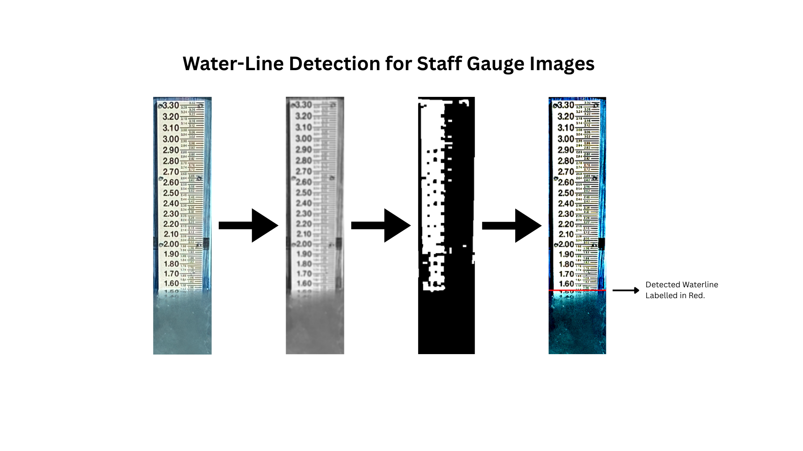

University at Buffalo, State University of New York
Jan 2025 — May 2026M.S. in Computer Science & Engineering
GPA: 3.7 / 4.0
Courses:
Software Engineering • Systems Programming • Back-end Engineer
Scale-driven Back-End Engineer with 3 years of experience in building high-availability SaaS and AI-enabled systems. Previously scaled billing and core features for B2B Voice SaaS, currently handling $3M+ ARR and 10k+ Monthly Active Users.
M.S. in Computer Science & Engineering
GPA: 3.7 / 4.0
Courses:
BSc. (Hons) in Computing
GPA: 4.0 / 4.0 (First Class Honours)
Thesis:
Courses:

Python, Java, Go, TypeScript, JavaScript, C, C++
Django, FastAPI, GraphQL, gRPC, REST, PyTest, MERN
Pandas, Matplotlib, Scikit-Learn, TensorFlow, Keras, PyTorch, YOLOv8, LLM/GenAI
PostgreSQL, MySQL, MongoDB, Redis
Linux/Unix, Docker, AWS S3, CI/CD, GitHub Actions, Grafana, Distributed Systems